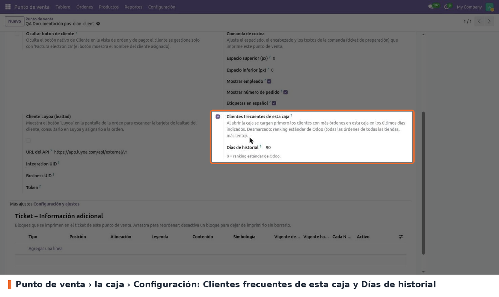

Hace más rápida la carga de clientes al abrir el Punto de Venta de Odoo 19. Es opcional: no se instala solo, se activa por caja y desinstalarlo deja todo como en el estándar.
Al abrir la caja, el POS carga una lista de «clientes frecuentes» (100 por defecto). El estándar de Odoo los ordena contando todas las órdenes de POS de la base en cada apertura y cada vez que se pide otra página de clientes: con 853.810 órdenes (staging) son 6,6 s por llamada, y el resultado mezcla todas las tiendas.
Con este módulo, en cada caja que lo tenga activado, el ranking cuenta solo las órdenes de esa
caja en los últimos 90 días (configurable). Es más rápido y cada tienda carga primero a sus
propios clientes. El cliente por defecto de la caja (pw_pos_default_customer) se carga siempre.
Junto con pos_settle_due (Enterprise) se instala solo el puente
pos_partner_performance_settle_due, que deja de calcular la deuda de cada cliente: es la parte que
más tiempo ahorra (en staging, solo total_due del cliente por defecto de una tienda tardaba
37,7 s en cada apertura).
Instalar manualmente desde Aplicaciones (no tiene instalación automática): es una mejora de rendimiento que se decide por entorno.
Depende de point_of_sale y pw_pos_default_customer.
Si la base tiene pos_settle_due (Enterprise), al instalar este módulo Odoo instala también
pos_partner_performance_settle_due. Desinstalar este módulo desinstala también el puente. Las dos
carpetas tienen que estar en el código del servidor.
Después de instalar o desinstalar, en cada caja: menú ☰ → Recargar datos, para que el POS tome los cambios.
Por caja, en Punto de venta › Configuración › Punto de venta → la caja → pestaña Configuración:

Configuración de la caja: Clientes frecuentes de esta caja y Días de historial
frequent_partners_by_store). Activado por defecto en
todas las cajas al instalar. Desmarcado, la caja vuelve al ranking estándar de Odoo.frequent_partners_days). Por defecto 90. Visible solo con la opción
anterior marcada. Con 0 se usa el ranking estándar; no admite valores negativos.La cantidad de clientes que se cargan sigue siendo la del parámetro estándar
point_of_sale.limited_customer_count (100 por defecto, en Ajustes › Técnico › Parámetros del
sistema).
Los cambios los toma el POS al volver a cargar los datos (menú ☰ → Recargar datos).
No cambia nada en la pantalla del cajero. Al abrir la caja, el POS carga primero los clientes con más órdenes en esa caja en los últimos 90 días y, después, el resto de contactos por nombre, hasta completar la cantidad configurada.
Donde la lista de clientes está visible, se nota en el orden: aparecen primero los clientes de la tienda (por ejemplo, sus convenios) y no los de otras tiendas. Al bajar en la lista se cargan más con el mismo orden. La búsqueda (escribir y pulsar Enter) sigue buscando en todos los contactos, como en el estándar.
El cliente por defecto de la caja (pw_pos_default_customer) se carga siempre al abrirla. No se
vuelve a agregar en las páginas siguientes de la lista: así cada página trae exactamente la cantidad
configurada y no se salta ningún cliente.
pos.config.get_limited_partners_loading (no la extiende):
si Odoo cambia ese método en una versión futura, hay que revisar este módulo. Vuelve a agregar
por su cuenta el cliente por defecto de pw_pos_default_customer.